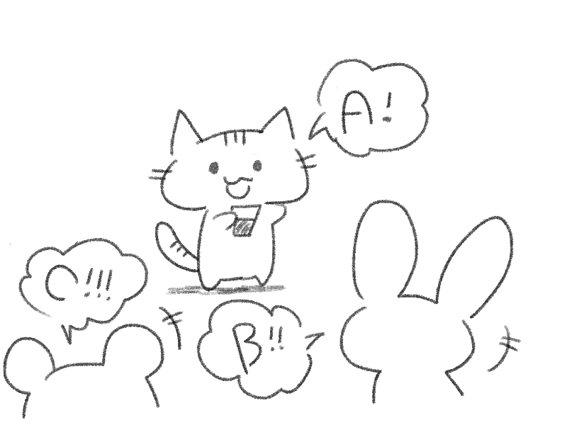
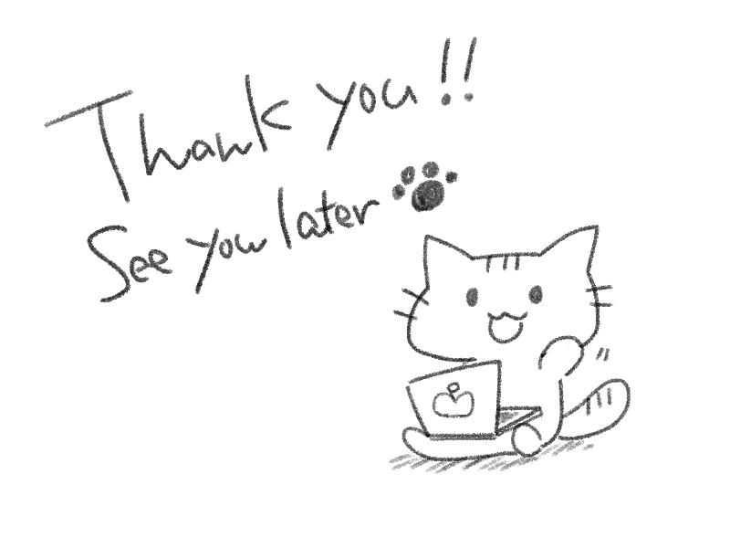

クエスト
クエストクエストクリア!!
20XX年4月のとある日…

256times成果発表イベントで登壇を終えたねこは、テクノロジーコミュニティの仲間たちと、これから作るアプリのこと、勉強してみたい技術のこと、これからくる楽しい未来について話していた。
Webアプリを作ろうとして挫けてから、256timesと仲間の手を借りて立ち上がった先にはたくさんの夢と希望がありました。
歩み方は教えてもらった、なら、あとは走り続けるのみ！
ねこのWeb開発猫生はまだまだこれからなのである！！

~ to be continued ~
~ テクノロジーコミュニティで会いましょう！ ~